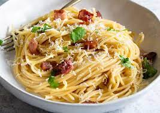

Carbonara

Spaghetti Carbonara
This dish is a deli egg-bacon-and-cheese-on-a-roll that has been pasta-fied, fancified, fetishized and turned into an Italian tradition that, like many inviolate Italian traditions, is actually far less old than the Mayflower. Because America may have contributed to its creation, carbonara is Exhibit A in the back-and-forth between Italy and the United States when it comes to food. Remember: the main goal is creaminess.
Ingredients
- Salt
- 2 large eggs and 2 large yolks, room temperature
- 1 ounce (about ⅓ packed cup) grated pecorino Romano, plus additional for serving
- 1 ounce (about ⅓ packed cup) grated Parmesan
- Coarsely ground black pepper
- 1 tablespoon olive oil
- 3½ ounces of slab guanciale (see recipe), pancetta or bacon, sliced into pieces about ¼ inch thick by ⅓ inch square
- 12 ounces spaghetti (about ¾ box)
Steps
- Cook sausage, ground beef, onion, and garlic in a Dutch oven over medium heat until well browned. Stir in crushed tomatoes, tomato sauce, tomato paste, and water. Season with sugar, 2 tablespoons parsley, basil, 1 teaspoon salt, Italian seasoning, fennel seeds, and pepper. Simmer, covered, for about 1 1/2 hours, stirring occasionally.
- Bring a large pot of lightly salted water to a boil. Cook lasagna noodles in boiling water for 8 to 10 minutes. Drain noodles, and rinse with cold water. In a mixing bowl, combine ricotta cheese with egg, remaining 2 tablespoons parsley, and 1/2 teaspoon salt.
- Preheat the oven to 375 degrees F (190 degrees C).
- o assemble, spread 1 1/2 cups of meat sauce in the bottom of a 9x13-inch baking dish. Arrange 6 noodles lengthwise over meat sauce. Spread with 1/2 of the ricotta cheese mixture. Top with 1/3 of the mozzarella cheese slices. Spoon 1 1/2 cups meat sauce over mozzarella, and sprinkle with 1/4 cup Parmesan cheese. Repeat layers, and top with remaining mozzarella and Parmesan cheese. Cover with foil: to prevent sticking, either spray foil with cooking spray or make sure the foil does not touch the cheese.
- Bake in the preheated oven for 25 minutes. Remove the foil and bake for an additional 25 minutes. Rest lasagna for 15 minutes before serving.